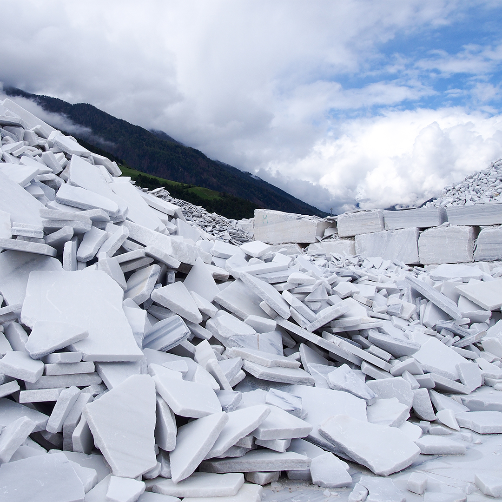

Selected Work

Luxurious Waste

Offcut Tales

CircÛbi

Untangled | Entangled

Sonnenstrasse

Appelstrasse

Photography
Offcut Tales
∅

- Master's Thesis | 2022 | Bauhaus-Universität Weimar, Faculty of Architecture and Urbanism
- Supervisors: Prof. Dr. Jan Willmann, Dr. Sven Schneider, Dr. Stephan Schütz
- Support: Michael Braun(Photography, Robotic Setup)
- Workshop Support: Dr. Christian Hanke, Ringo Gunkel (Wood Workshop), Christian Möhwald (Water-Jet Cutting), Matthias Henkelmann (CNC Milling)
- Presentations: ACADIA 2023, InfAU


CircÛbi
∅
- Design–Build Project | 2023 | ETH Zurich, D-ARCH & D-BAUG | arc award 2023 winner
- Supervisors: Prof. Momoyo Kaijima, Prof. Dr. Catherine De Wolf
- Teaching Team: Elias Knecht, Inés Ariza, Martin Bucher, Anna Buser, Brandon Byers, Matthew Gordon, Dr. Meliha Honic, Beril Önalan, Deepika Raghu, Arabelle de Saussure, Heidi Silvennoinen
- Student Team: Cashen Adkins, Carole Désirée Allenbach, Alan Michel von Arx Carrascal, Monica-Mariana Ciobotar, Emma Maria Zeindl Cronin, Béla Dalcher, Vadym Gerashchenkov, Yu Han, Mu He, Xi Huang, Filip Stanislavov Kalapish, Robin Karutz, Konrad Michael Kramer, Samuel Marc Labhard, Maxime Lanter, Andreas Lanz, Zhaoye Li, Loukas Mettas, Despoina Papadopoulou, Giona Luca Peter, Yannick Reich, Dominik Reisach, Michelle Tanja Schenk, Tim Stettler, Marvin Huck Dirk Trottmann, Claudia La Valle, Araceli Rodriguez Vallejo, Hanshuo Wu, Lukas Zink
- Collaborations: baubüro in situ ag, Wiederverwerkle GmbH, B3 Kolb AG
- Project Description: In summer 2022, three temporary wooden buildings - the Huber Pavilions - had to make way for a new building on the ETH Hönggerberg campus. The CircÛbi teaching project took advantage of this opportunity: under the co-leadership of two ETH professors, civil engineer Catherine De Wolf and architect Momoyo Kaijima, students collected the construction elements (or components) of the dismantled teaching buildings in order to reuse the materials according to the principle of the circular economy. For an entire semester, around 30 students from the fields of civil engineering, architecture, mechanical engineering, computer science and materials science worked together on issues relating to the reuse of building materials. In order to master the logistical Herculean task, they inventoried the components with lasered QR codes and thus created a digitalised interface - which enabled them to create a new building from reused wooden components: the Re-Use Pavilion on the ETH Hönggerberg campus. The work of art of the circular economy has now been honoured with the Swiss Architecture Prize Arc Award in the "Next Generation" category. Text by CEA, ETH Zurich.
Untangled | Entangled
∅
- Installation Competition | 2024 | Tallinn Architecture Biennale 2024
- Project Team: Hector Gruntdal Grønborg, Lavinia Krick, Dominik Reisach, Lia Zinngrebe
Re:Boat
∅
- Buildner Microhome Competition #3 | 2021
- Project Team: Dominik Reisach, Lia Zinngrebe
- Project Description: Living by the water – the reason why so many people are drawn to coastal towns. But why not live on the water and tackle the issues of housing shortages and urban sprawl? This design proposal suggests a floating tiny home that is reachable by boat. Yet, this proposal also addresses a second issue: Sailing boat graveyards. The floating houseboat makes use of everything there is to find. Fiberglass masts become the frame structure of the houseboat, joined with sailing ropes. Shredded glass fibers from hulls are packed into sails to become insulation or are processed into cladding for the interior walls. The boat windows become windows for the houseboat, while the wooden deck becomes cladding for the floor and façade. Equipped with these materials, the houseboat presents itself in a simplistic and timeless design. Its unfoldable furniture in the living space is hidden in the floor and the wall, whereas the sleeping area is on top of the bathroom to save space. To ensure independence from the grid, the houseboat is equipped with solar panels to generate electricity, a hydroponic system to grow vegetables, and a modern water management circulation system.
Sonnenstrasse
∅
- Competition | Sonnenstrasse, Munich, DE | 1st Prize | 2019 | Allmann Wappner Architekten
- Project Team: Alexandra Wagner (Design Direction), Philipp Vogeley (Lead), Simon Kochhan, Dominik Reisach, Timm Traxler, Nicolas Wolf
- Visualization: Forbes Massie Studio
- Project Description: The defining architectural features of this design are transparency, structural clarity, a place of prominence within the urban context and a symbiotic relationship between the office units and the exterior space. This roughly 2,400-square-meter site is located in downtown Munich in a traditional neighborhood characterized by the typical modernist architecture of the post-war period. With its unique C-shape, the building encircles a large interior courtyard and takes maximum advantage of the natural light all year round. We developed our climatic concept by tracking the movement of the sun and analyzing the precise amount of light that penetrates the façade. The use of solar shading and glare protection elements as well as cooling systems ensure that the interior spaces are shaded and cool during the summer months. The façade is defined by a series of alternating round and square columns; the former reminiscent of ancient colonnades and the latter made of solid concrete. An outer shell lined with folding glass doors is used for ventilation, transforming the main façade into a perpetually evolving image as these “wings” open and close to varying degrees. The materials we used further accentuate this multi-layered effect: brass-colored metal slats contrast with the light grey concrete of the outer shell. The new building has an open and inviting appearance. The ground floor offers space for retail and hospitality units in a variety of flexible floorplans. In keeping with the attractive location, the upper floors offer bright, generous office spaces, which can be adapted for various uses and accommodate traditional as well as innovative workplace designs. Our multifunctional floorplans work with a wide range of office models, from “hot-desk” spaces to fixed workstations as well as business club, cellular and open plan offices — or any combination thereof. Text by Allmann Wappner Architekten.
Appelstrasse
∅
- Competition | Façade Refurbishment Appelstrasse, Hanover, DE | 2019 | Allmann Wappner Architekten
- Project Team: Philipp Vogeley (Lead), Maximilian Jüngling (Project Lead), Dominik Reisach, Štěpánka Úlehlová, Simon Köppl
- Visualization: Grauwald Studio
Photography
∅